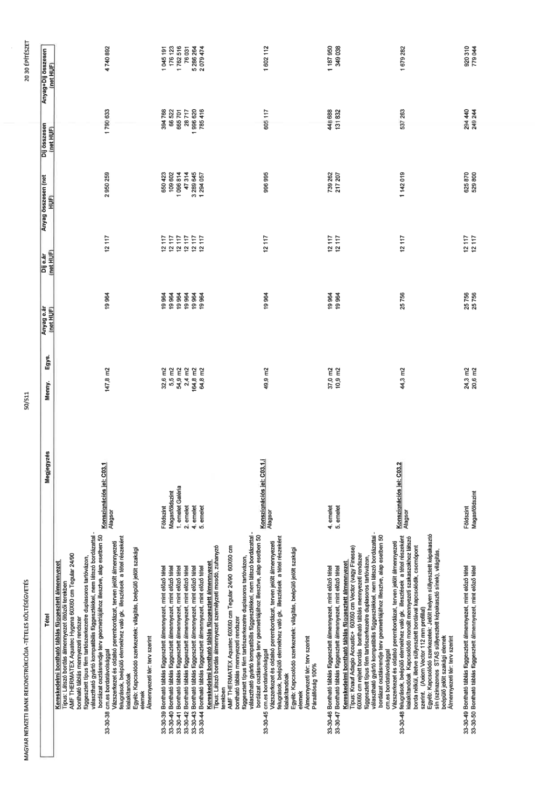

| Tétel | Megjegyzés | Menny. | Egys. | Anyag e.ár (net HUF) | Díj e.ár (net HUF) | Anyag összesen (net HUF) | Díj összesen (net HUF) | Anyag+Díj összesen (net HUF) |
|---|---|---|---|---|---|---|---|---|
| 33-30-38 Kereskedelmi bontható táblás függesztett álmennyezet Típus: Látszó bordás álmennyezet öltöző terekben AMF THERMATEX Aquatec 60x60 cm Tegular 24/90 bordázat osztásrendje terv geometriájához illesztve, alap esetben 50 cm-es bordatávolsággal függesztett típus fém tartószerkezetre duplasoros tartóvázon, választható gyártó kompatibilis függesztőkkel, nem látszó bordázattal - Vázszerkezet és oldalsó perembordázat, terven jelölt álmennyezeti felugrások, beépülő elemekhez való gk. illesztések a tétel részeként kialakítandók Egyéb: Kapcsolódó szerkezetek: világítás, beépülő jelölt szakági elemek Álmennyezeti tér: terv szerint | Konszignációs jel: C03.1 Alagsor | 147,8 | m2 | 19 964 | 12 117 | 2 950 259 | 1 790 633 | 4 740 892 |
| 33-30-39 Bontható táblás függesztett álmennyezet, mint előző tétel | Földszint | 32,6 | m2 | 19 964 | 12 117 | 650 423 | 394 768 | 1 045 191 |
| 33-30-40 Bontható táblás függesztett álmennyezet, mint előző tétel | Magasföldszint | 5,5 | m2 | 19 964 | 12 117 | 109 802 | 66 322 | 176 123 |
| 33-30-41 Bontható táblás függesztett álmennyezet, mint előző tétel | 1. emelet/ Galéria | 54,9 | m2 | 19 964 | 12 117 | 1 096 814 | 665 701 | 1 762 516 |
| 33-30-42 Bontható táblás függesztett álmennyezet, mint előző tétel | 2. emelet | 2,4 | m2 | 19 964 | 12 117 | 47 314 | 28 717 | 76 031 |
| 33-30-43 Bontható táblás függesztett álmennyezet, mint előző tétel | 4. emelet | 164,8 | m2 | 19 964 | 12 117 | 3 289 645 | 1 996 620 | 5 286 265 |
| 33-30-44 Bontható táblás függesztett álmennyezet, mint előző tétel | 5. emelet | 64,8 | m2 | 19 964 | 12 117 | 1 294 057 | 784 416 | 2 078 474 |
| 33-30-45 Kereskedelmi bontható táblás függesztett álmennyezet Típus: Látszó bordás álmennyezet mosdó, zuhanyzó terekben AMF THERMATEX Aquatec 60x60 cm Tegular 24/90 60x60 cm-es bordatávolsággal függesztett típus fém tartószerkezetre duplasoros tartóvázon, választható gyártó kompatibilis függesztőkkel, nem látszó bordázattal - bordázat osztásrendje terv geometriájához illesztve, alap esetben 50 cm-es bordatávolsággal Vázszerkezet és oldalsó perembordázat, terven jelölt álmennyezeti felugrások, beépülő elemekhez való gk. illesztések a tétel részeként kialakítandók Egyéb: Kapcsolódó szerkezetek: világítás, beépülő jelölt szakági elemek Álmennyezeti tér: terv szerint Paraállóság 100% | Konszignációs jel: C03.1.i Alagsor | 49,9 | m2 | 19 964 | 12 117 | 996 995 | 605 117 | 1 602 112 |
| 33-30-46 Bontható táblás függesztett álmennyezet, mint előző tétel | 4. emelet | 37,0 | m2 | 19 964 | 12 117 | 739 262 | 448 688 | 1 187 950 |
| 33-30-47 Bontható táblás függesztett álmennyezet, mint előző tétel | 5. emelet | 10,9 | m2 | 19 964 | 12 117 | 217 207 | 131 832 | 349 038 |
| 33-30-48 Kereskedelmi bontható táblás függesztett álmennyezet Típus: Armstrong Accoustic 60x60 cm Vector (vagy minőségi és műszaki tartalommal bíró bontható táblás mennyezeti rendszer) 60x60 cm rejtett bordás bontható táblás mennyezeti rendszer függesztett típus fém tartószerkezetre duplasoros tartóvázon, választható gyártó kompatibilis függesztőkkel, nem látszó bordázattal - bordázat osztásrendje terv geometriájához illesztve, alap esetben 50 cm-es bordatávolsággal Vázszerkezet és oldalsó perembordázat, terven jelölt álmennyezeti felugrások, beépülő elemekhez való gk. illesztések a tétel részeként kialakítandók Egyéb: Kapcsolódó szerkezetek: Jelölt helyen süllyesztett képakasztó sín (színazonos STAS süllyesztett képakasztó sínek), világítás, beépülő jelölt szakági elemek Álmennyezeti tér: terv szerint | Konszignációs jel: C03.2 Alagsor | 44,3 | m2 | 25 756 | 12 117 | 1 142 019 | 537 263 | 1 679 282 |
| 33-30-49 Bontható táblás függesztett álmennyezet, mint előző tétel | Földszint | 24,3 | m2 | 25 756 | 12 117 | 625 870 | 294 440 | 920 310 |
| 33-30-50 Bontható táblás függesztett álmennyezet, mint előző tétel | Magasföldszint | 20,6 | m2 | 25 756 | 12 117 | 529 800 | 249 244 | 779 044 |
